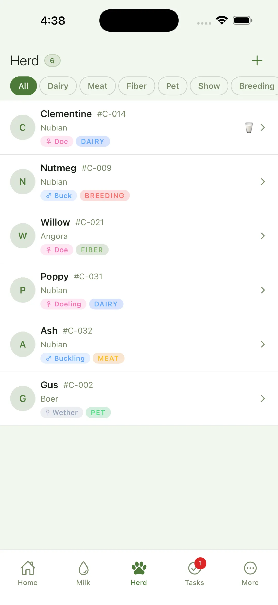
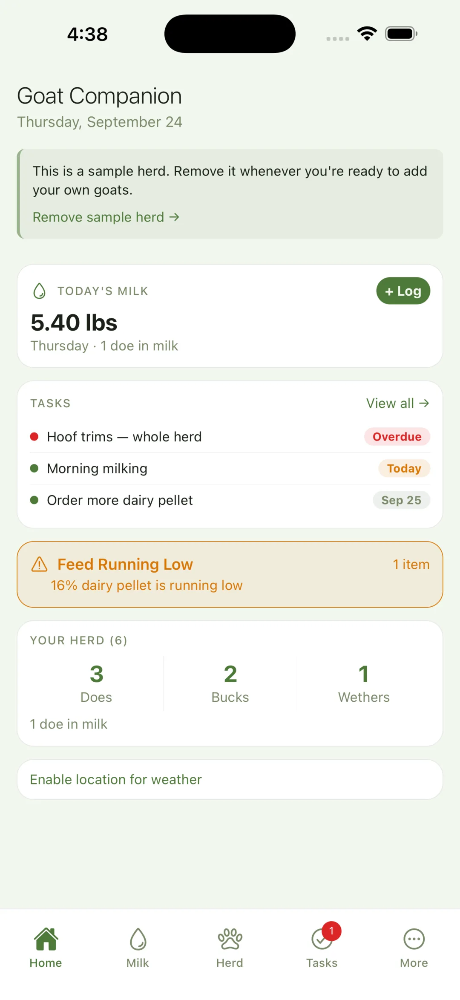
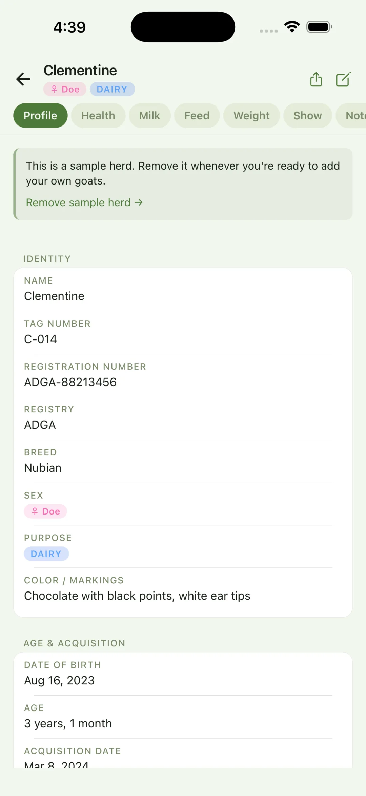
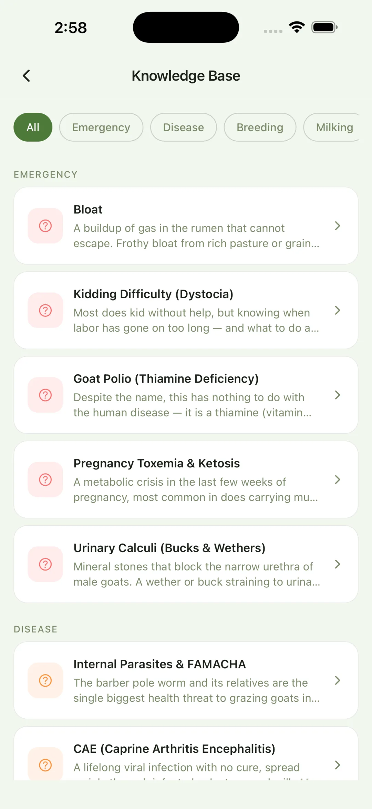

Goat keeping runs on records: FAMACHA checks, withdrawal windows, who's due to kid, how much each doe is giving. Goat Companion keeps all of it in one place for dairy, meat, fiber, and pet herds, stored on your device.



The short version, in plain terms.
Every doe, buck, and wether, with the history you need at the gate or the vet's. Swipe through a few of the screens.

The things you actually need to remember, in one tidy place.
Score FAMACHA with a running history, log illness, vaccinations, and hoof trims, and set health-check reminders per goat.
Log a medication and the app tracks the milk and meat withdrawal windows for you, so nothing goes in the bucket that shouldn't.
Breeding dates, due-date countdowns, and kidding logs linked back to dam and sire, so next season's plan is built on real numbers.
Log milk per doe and watch the trend, keep feed stock with low-stock alerts, and, with Pro, record shearing dates, weights, and grades.
Track expenses for free (Pro adds income and profit-and-loss reports), plus weight tracking with average daily gain worked out for you.
PDF health reports for your vet. Pro adds CSV export and a printable herd project book for 4-H and FFA.
The free version isn't a trial. It's the complete daily app, with no time limit and no account.
The store shows your local price. Pro is a one-time purchase, not a subscription.
Most apps in this space want an account first. Goat Companion doesn't. I build these apps on my own, and what happens in your barn is your business.
There's no sign-up and no server holding your information. The app works offline. It only goes online to check a Pro purchase, fetch your local weather if you open it, and turn speech into text if you use voice input.
Goat Companion is a private herd-management app for goat keepers, on iPhone, iPad and Android. It tracks each goat's health, FAMACHA scores, medications (with milk and meat withdrawal warnings), weights, milk and feed. Pro adds breeding, kidding and fiber records. Everything is stored on your device, and there's no account.
Yes, this is one. Goat Companion is free to download and use, with no time limit. The optional Pro unlock is a one-time purchase ($9.99 in the US). There are no monthly or yearly fees.
All of them. Nubians, Boers, Nigerian Dwarves, Angoras, and every other dairy, meat, fiber and pet breed. Tag each goat by purpose and filter the herd however you like.
Free covers day-to-day herd care: goat profiles, weights with ADG, FAMACHA scoring, medications with withdrawal warnings, health records, the milk log, feed, tasks, expenses, PDF health reports and backups. Pro adds breeding, pregnancy and kidding records, fiber tracking, FAMACHA trends and lactation curves, income and profit-and-loss reports, CSV export, the printable herd project book, and journal photos.
Yes. Score each goat and keep the full history in the free version, so you can catch a parasite problem early. Pro adds a trend chart for each goat.
Many medications mean milk or meat shouldn't be used for a set period afterward. Log the medication and Goat Companion counts down both windows and warns you while a goat is still in withdrawal.
Yes, with Pro. Record breedings, follow each pregnancy with a due-date countdown, and log kiddings (litter size, birth weights and outcomes) linked back to the dam and sire.
Yes. The free milk log keeps per-goat and per-day totals. Pro adds a lactation curve for each doe.
Yes. Pro makes a printable herd project book (PDF) and exports your records to CSV. Every version can share PDF health reports.
Yes: Homestead Companion covers a mixed place, with goats as one of several add-on modules alongside a shared calendar, budget and garden. Goat Companion is for people who keep goats seriously and want the deepest tools for them.
No. There's no sign-up, no email, no password. You open the app and your records live on your device from the first tap.
On your phone or tablet, and nowhere else. To move to a new phone, make a backup (password-protected if you like), save it wherever you choose, and restore it on the new device.
Yes. It only goes online for three optional things: checking a Pro purchase with the app store, your local weather when you view it (approximate location to Open-Meteo, which doesn't keep it), and voice-to-text if you use it.
I do. I'm Taur, and Taur Studios is my one-person studio. I build private, no-account apps for people who keep animals, including Equine Companion, Flock Companion and Homestead Companion. Questions and ideas go to taurstudios@gmail.com.
Free on iOS and Android. No account, no ads, no tracking. Just your goats.